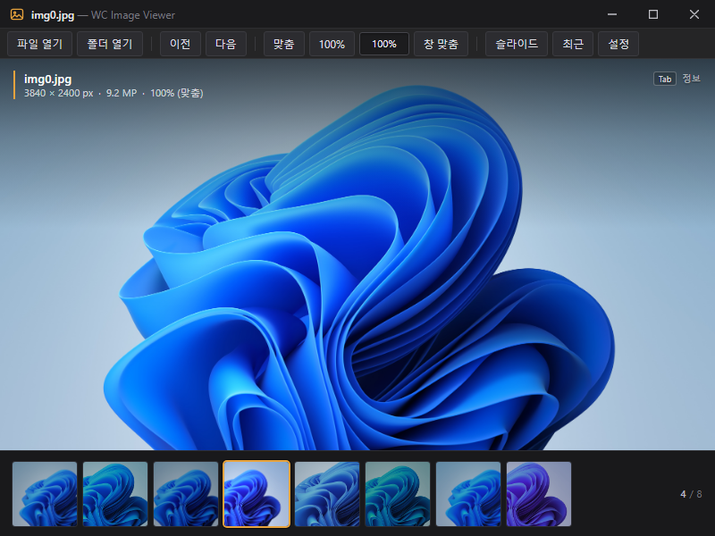

Design study · v0.3 · 2026-10-23
Main window chrome — three directions
이미지가 주인공인 뷰어의 메인 창 크롬 시안. 같은 팔레트(#1E1E1E / #252526 / #E8A33D)와
같은 11개 컨트롤을 유지한 채, 타이틀바·툴바·썸네일의 밀도만 바꿔 비교한다.
모든 이미지는 1280×800 실제 렌더링이며, 사진은 Windows 기본 배경화면
img0.jpg를 사용했다.
Render Edge headless · 1x DPI
Font Segoe UI / Malgun Gothic
Source src/ 변경 없음
Files design/ui-concepts/
최종 선택
B — Seamless
시안 비교 후 B를 선택했다. 구현에서는 크롬을 시안의 38px에서 28px로 더 줄이고, 썸네일은 74px 플로팅 도크로 옮겼다. 아이콘 발견성은 툴팁·단축키·AutomationProperties.Name으로 보완했다.
28 px chrome · 74 px dock
01 — Directions
세 가지 크롬, 같은 기능
강조 색은 선택된 썸네일과 호버/포커스에만 쓴다. 타이틀바·툴바의 높이는 CSS 픽셀 기준이며,
측정값은 각 HTML을 1280×800과 800×600으로 실제 레이아웃한 결과다.
A
Graphite
가장 보수적인 진화. 32px 커스텀 타이틀바와 34px 컴팩트 툴바, 짧은 텍스트 라벨 유지, 앰버 액센트.
Chrome 66 px
Image 638 px
Hit 46–73 × 28
강점
11개 컨트롤이 전부 텍스트 라벨 — 발견성 최상.
기존 Settings/Bookmark/Rename의 채워진 버튼·3px 라운드와 톤이 같다.
800×600에서 77px 여유. 라벨이 잘리지 않는다.
대가
크롬 66px — B보다 28px 두껍다. “최소”라기보다 “정돈된 기본값”.
텍스트 라벨이 많아 버튼 폭이 46–73px로 제각각.
타이틀바를 직접 그리므로 최대화/스냅 처리가 필요.
B
Seamless
타이틀바와 툴바를 38px 한 줄로 합친다. 아이콘 + 툴팁 중심, 썸네일은 이미지 위에 떠 있는 도크.
Chrome 38 px
Image 762 px
Hit 32 × 32
강점
크롬 38px, 이미지 762px — 사진이 가장 크다.
떠 있는 썸네일 도크 덕에 이미지가 창 가장자리까지 이어진다.
800×600에서 84px 여유. 툴팁을 감안하면 충분하다.
대가
아이콘 단독 — 툴팁을 배우기 전까지 발견성이 가장 낮다.
캡션 영역에 10개 버튼이 들어가 WPF hit-test 설정이 까다롭다.
도크는 WPF에서 backdrop blur가 비싸다 — 반투명 단색으로 대체해야 함. 대화상자 톤과도 가장 멀다.
아이콘 순서 — 파일 열기 · 폴더 열기 | 이전 · 다음 · 맞춤 · 100% · 배율 입력 · 창 맞춤
| 슬라이드 · 최근 · 설정.
C
Editorial
28px 초박형 타이틀바, 저대비 회색, 선 대신 여백. 텍스트 버튼만 남기고 장식은 앰버 밑줄 하나로 줄인다.
Chrome 64 px
Image 648 px
Hit 40–67 × 32
강점
크롬 64px인데 A보다 더 가볍게 읽힌다. 여백과 타이포가 일한다.
모든 라벨이 보이고, 800×600에서 133px나 남는다.
앰버 밑줄 하나로 호버/포커스/선택을 일관되게 설명할 수 있다.
대가
28px 타이틀바는 Windows 기본 32px보다 낮아 드래그 영역이 얇다.
저대비 텍스트(#9C9CA3)가 밝은 사진 위에서 약해 보일 수 있다.
채워진 대화상자 버튼과 톤을 맞추려면 Settings/Bookmark/Rename도 얇게 재스킨해야 한다.
02 — Minimum size
800×600에서도 넘치지 않는다
A(Graphite)를 최소 창 크기 800×600으로 실제 렌더링한 결과. 툴바 11개 컨트롤과 창 버튼이
모두 보이고, 콘텐츠 폭 707px / 가용 784px로 77px 가 남는다. B는 84px, C는 133px 여유.

A — Graphite @ 800×600 · 툴바 잘림 없음 · 이미지 영역 438px · 썸네일 96px
800×600 toolbar content 707 / 784 px 11개 컨트롤 + 구분선의 실제 폭
남는 폭 77 px 가용 폭 − 콘텐츠 폭
최소 창 800 × 600 현재 MainWindow.xaml의 MinWidth/MinHeight
03 — Comparison
같은 기준으로 비교
시안
타이틀바 + 툴바
이미지 영역 @1280×800
버튼 히트 영역
발견성
WPF 구현 난이도
대화상자 톤 일관성
800×600 여유
A Graphite
32 + 34 = 66 px
638 px
46–73 × 28
높음 — 전부 라벨
낮음–중간
높음 — 기존 버튼/라운드 그대로
+77 px
B Seamless 최종 선택
38 px (한 줄)
762 px (도크 오버레이)
32 × 32
중간 — 아이콘 + 툴팁
중간–높음
낮음 — 아이콘 바·도크에 대응하는 대화상자 없음
+84 px
C Editorial
28 + 36 = 64 px
648 px
40–67 × 32
중간–높음 — 라벨, 저대비
낮음–중간
중간 — 대화상자 재스킨 필요
+133 px
히트 영역은 마우스 기준. 썸네일은 세 시안 모두 52–72px로 터치 44px 가이드를 넘고,
툴바 버튼과 윈도우 컨트롤은 Windows 데스크톱 관례(28–38px 높이)를 따른다.
시안 장점 단점
A Graphite
라벨 11개 유지 · 대화상자 무수정 · 800×600에서 +77px · 구현 리스크 최소
B보다 28px 두껍고 버튼 폭이 46–73px로 제각각
B Seamless 최종 선택
크롬 38px, 이미지 762px · 도크가 이미지를 끊지 않음 · 가장 몰입감 있음
아이콘 단독이라 툴팁 의존 · 캡션 hit-test 위험 · WPF 블러 비용 · 대화상자와 톤 불일치
C Editorial
64px가 더 가볍게 읽힘 · 800×600에서 +133px · 밑줄 하나로 상태 표현 통일
28px 드래그 영역 · 저대비 · 대화상자까지 재스킨 필요 · 창 버튼 44×28
04 — WPF constraints
구현 가능성
WindowChrome
CaptionHeight를 타이틀바 높이(32 / 38 / 28)로 두고, 캡션 안의 버튼에는 IsHitTestVisibleInChrome=True. AllowsTransparency는 쓰지 않는다 — 네이티브 스냅·리사이즈가 깨진다.
리사이즈 · 스냅 · 최대화
WindowStyle=None + ResizeMode=CanResize + WindowChrome 조합으로 DWM 리사이즈 테두리와 Aero Snap을 유지. 최대화 시 1px 오버플로는 WM_GETMINMAXINFO로 보정.
F11 · High-DPI
전체화면에서는 크롬을 Collapse하고 CaptionHeight=0으로. 모든 값은 DIP라서 125/150%에서 32→40/48px로 자동 스케일. 아이콘은 Path/Viewbox 벡터.
전체 제약과 체크리스트는 README.md 에 정리했다.
세 시안 모두 최소 800×600, High-DPI, F11 전체화면, 네이티브 리사이즈/스냅/최대화 조건을 만족했다.
최종적으로 B를 선택해 28px 크롬과 74px 플로팅 도크로 구현했다.